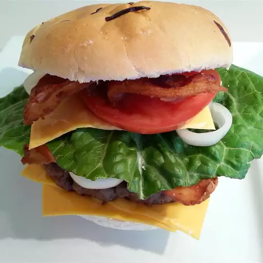

Hamburger

Description
This aptly named hamburger recipe uses evaporated milk, eggs, and bread crumbs to create incredibly juicy and flavorful hamburger patties that will rival your favorite burger joint.
ingredients
- 2 pounds ground beef
- 1 egg, beaten
- ¾ cup dry bread crumbs
- 3 tablespoons evaporated milk
- 2 tablespoons Worcestershire sauce
- ⅛ teaspoon cayenne pepper
- 2 cloves garlic, minced
Steps
- Gather all Ingredients
- Preheat a grill for high heat
- Mix the ground beef, egg, bread crumbs, evaporated milk, Worcestershire sauce, cayenne pepper, and garlic in a large bowl using your hands.
- Form the mixture into 8 hamburger patties
- Lightly oil the grill grate. Grill patties until browned and no longer pink, about 5 minutes per side.
- Serve hot and enjoy!
Return to main page